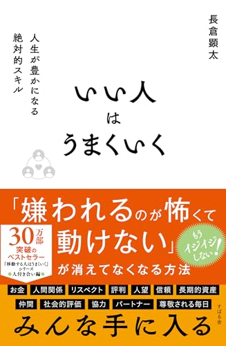
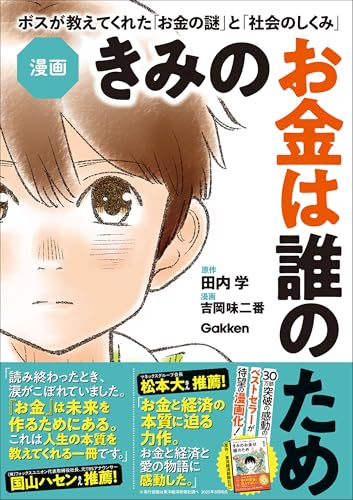
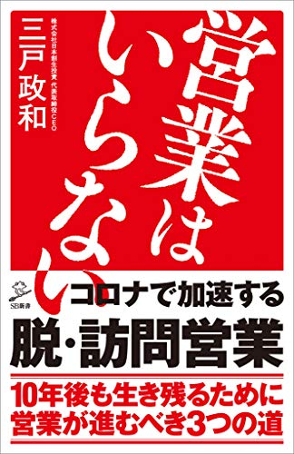
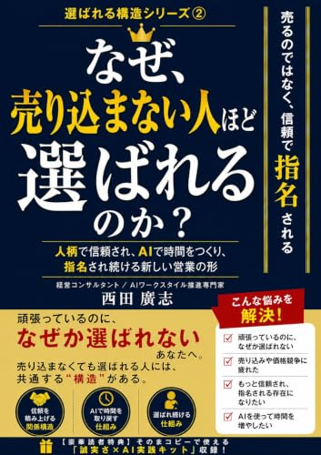

いい人はうまくいく
長倉 顕太
最初に読むと決めた1冊。人に会う・つなぐ・場をひらく仕事が多いおけもんにとって、「いい人でいること」を戦略として捉え直すきっかけになりそう。読んだ後にリベのオフ会で試せる。
登録した1か月で読みたい20冊。まずは『いい人はうまくいく』から出発して、気分の合う道へ寄り道してください。
すべて 2026-10-16 時点でAmazon.co.jpの商品ページに「Kindle Unlimited 読み放題」の対象表示（Kindle版 ￥0）を確認した本です。読み放題の対象は月ごとに入れ替わるので、読む前にもう一度ご確認ください。読む時間は目安です。
最初の一歩。気軽に、でもワクワクするところから

長倉 顕太
最初に読むと決めた1冊。人に会う・つなぐ・場をひらく仕事が多いおけもんにとって、「いい人でいること」を戦略として捉え直すきっかけになりそう。読んだ後にリベのオフ会で試せる。
長倉顕太
同じ長倉さんの本。「やる気がないのがフツウ」というタイトルは、ドーパミンで動くおもろそう駆動の人にこそ肩の力が抜ける。いい人の次に読むと温度がつながる。

いい人はうまくいく、の周りに置きたい本たち
声をかけてもらえる側になるための本


西田 廣志
サブタイトルに「人柄で信頼され、AIで時間をつくる」とある通り、人柄とAIの両方を扱う。介護・医療・福祉の導入支援で、売り込まずに声がかかる流れを考える材料に。
お客さまの現場とAIの両方が見える本
おもろそう駆動の取り扱い説明書
書く・見せる・続ける
マンガから入るお金の話
おもろそうを育てる本